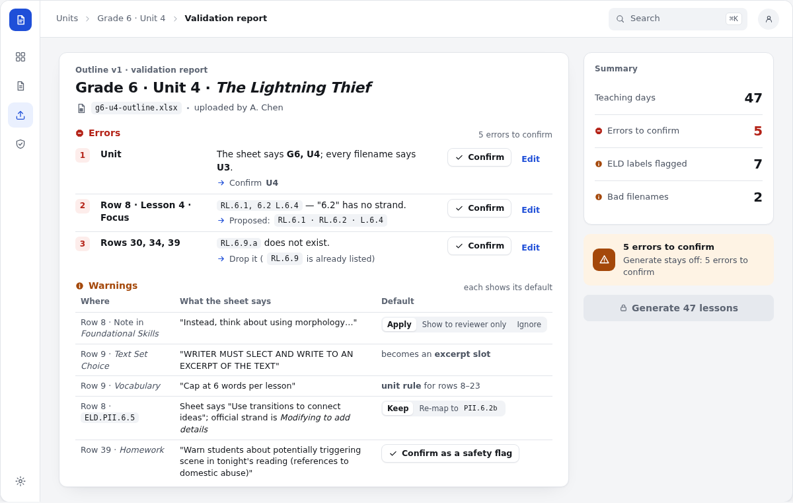
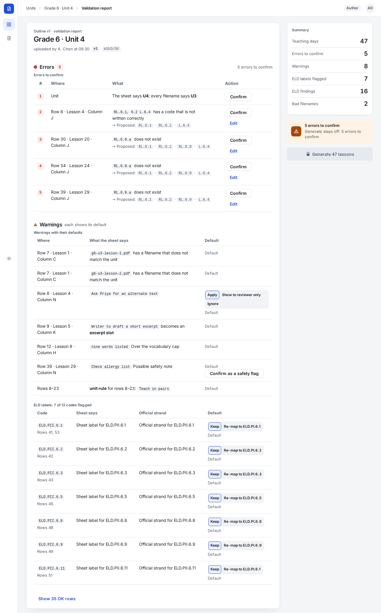
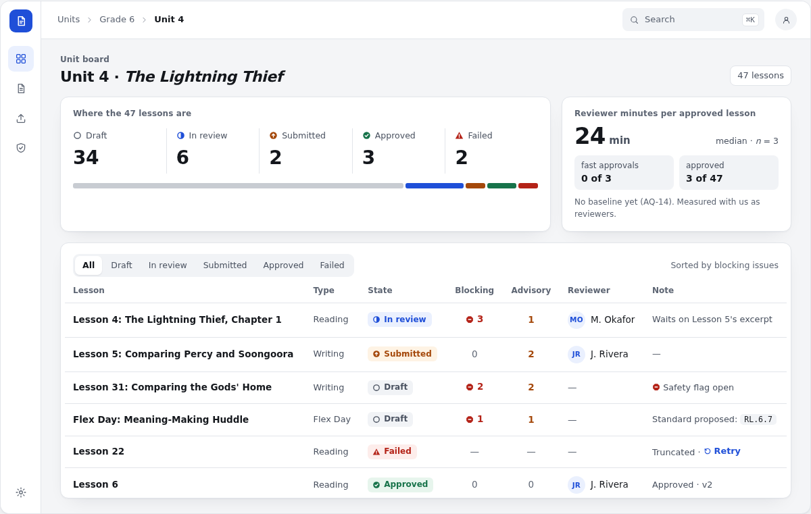
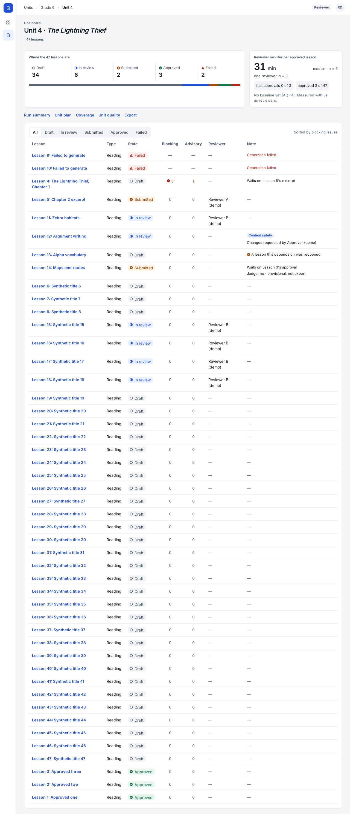
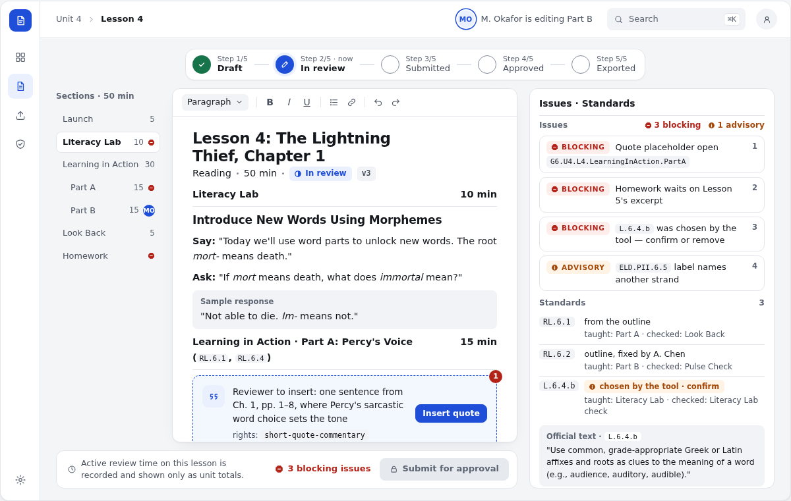
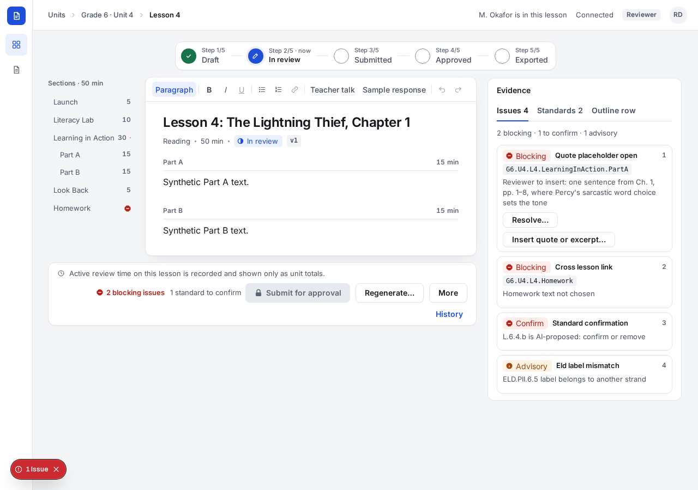
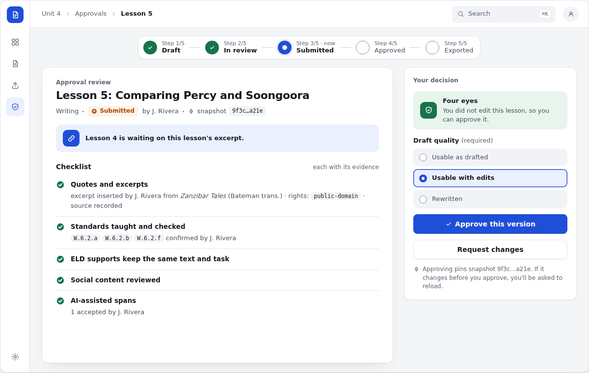
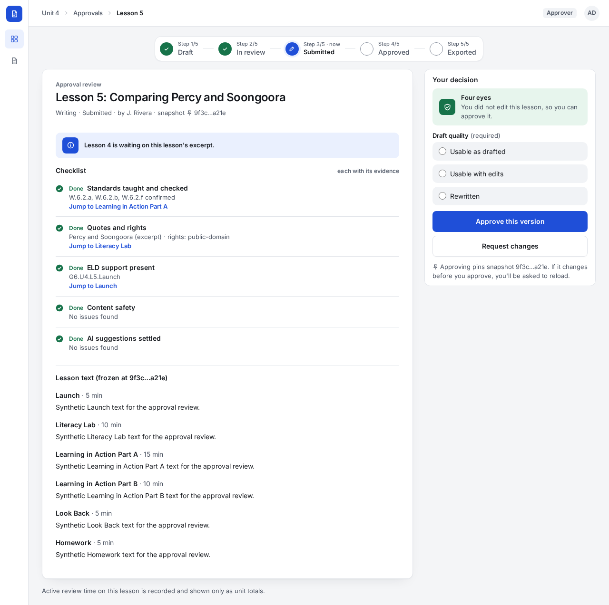

Look-sheet comparison
Each built screen beside the look-sheet mockup it was designed from. Every check is structural and answered by looking at both images: pass or fail, no deferral. Taste questions belong in the human review, not here.
M1 · SCR-4 Validation report
matches
apps/web/e2e/__screenshots__/validation-report/validation-report-main-1280-light.png
| Structural check (seen in both images) | Verdict | Note |
|---|---|---|
| The left nav is a narrow (about 60 px) icon rail with the blue product mark, not a text sidebar | pass | 60 px rail, blue mark, Units/Unit board icons |
| The top bar holds the breadcrumb (chevron separators, current page bold) and the account at the right | pass | Units › Grade 6 · Unit 4 › Validation report, chevrons, last crumb bold; role pill + avatar |
| Rendered in the light theme (cool grey desk, white sheets), design.md's default | pass | cool grey desk, white sheets |
| Two columns: the report sheet on the left and a narrow summary rail on the right | pass | report sheet full width (measure=full) + 288 px summary rail |
| Errors are numbered rows, each with its Confirm and Edit actions at the right of the row | pass | rows 1–5 numbered in danger tint, Confirm at right (Edit stacked under it: minor) |
| Generate sits in the rail and is locked while errors remain | pass | Generate 47 lessons locked in the rail under the warn banner |
M2 · SCR-8 Unit board
matches
apps/web/e2e/__screenshots__/board/board-main-1280-light.png
| Structural check (seen in both images) | Verdict | Note |
|---|---|---|
| The left nav is a narrow (about 60 px) icon rail with the blue product mark, not a text sidebar | pass | |
| The top bar holds the breadcrumb (chevron separators, current page bold) and the account at the right | pass | Units › Grade 6 › Unit 4 |
| Rendered in the light theme (cool grey desk, white sheets), design.md's default | pass | |
| Page header: the eyebrow 'Unit board', the unit title and the lesson count | pass | 'Unit board' eyebrow, title, count chip (under the title rather than right-aligned: minor) |
| Top row: the roll-up sheet (five state cells over a track bar) beside a narrower north-star tile | pass | five cells over a track bar, beside the 340 px north-star tile |
| Queue sheet: a segmented state filter at the left, 'Sorted by blocking issues' at the right, the table below | pass | segmented control (well track, raised current), sort note at right, table below |
M3 · SCR-9 Lesson workspace
matches
docs/ux/05-verify/look-compare/shots/M3-reviewer-1280-light.png
| Structural check (seen in both images) | Verdict | Note |
|---|---|---|
| The left nav is a narrow (about 60 px) icon rail with the blue product mark, not a text sidebar | pass | 60 px rail |
| The top bar holds the breadcrumb and the page status (presence or save state), with the account at the right | pass | breadcrumb left; 'M. Okafor is in this lesson' + 'Connected' + role pill + avatar right |
| Rendered in the light theme (cool grey desk, white sheets), design.md's default | pass | stays light with the browser emulating OS dark mode (data-theme=light, bg #F4F5F7) |
| The stepper is centred above the page, all five steps on one line | pass | centred, one line |
| Three columns: the section outline (about 160 px), the page sheet, the evidence rail (about 360 px) | pass | outline 160 · page sheet · evidence rail 360 (Issues/Standards/Outline row tabs per SCREEN_SPECS) |
| The formatting toolbar is one compact strip across the top of the page sheet | pass | one strip across the sheet top, one line at 1280 (Paragraph · B I U · lists, link · Teacher talk, Sample response · Undo, Redo) |
| The lesson reads as one document: section label rows over hairlines, no boxed text fields | pass | label rows (Part A · 15 min) over hairlines, no boxes |
| Issue cards are compact, and each card's actions sit inside the card | pass | Resolve… and Insert quote inside card 1 |
| One footer bar under the outline and the page: disclosure at the left, the blocking count once and Submit at the right | pass | one bar, '2 blocking issues' once, Submit right; wraps to two rows because Regenerate/More/History stay visible (D1 puts them in More) |
M4 · SCR-14 Approval review
matches
apps/web/e2e/__screenshots__/approval/approval-main-1280-light.png
| Structural check (seen in both images) | Verdict | Note |
|---|---|---|
| The left nav is a narrow (about 60 px) icon rail with the blue product mark, not a text sidebar | pass | |
| The top bar holds the breadcrumb (Unit 4 › Approvals › Lesson 5) and the account at the right | pass | |
| Rendered in the light theme (cool grey desk, white sheets), design.md's default | pass | |
| The stepper is centred above, step 3 (Submitted) current | pass | stepper centred, step 3 'now' |
| One page sheet holds the eyebrow, title, meta line, the info banner and the checklist | pass | one sheet: eyebrow, title, meta, info banner, checklist (meta state is text, not a pill: minor) |
| Checklist rows are divided by hairlines, each led by a green check glyph | pass | hairline-divided rows, green check glyphs |
| The decision card is in the right rail: four-eyes banner, three quality radio cards, full-width Approve and Request changes | pass | four-eyes success banner, three radio cards, full-width Approve + Request changes |